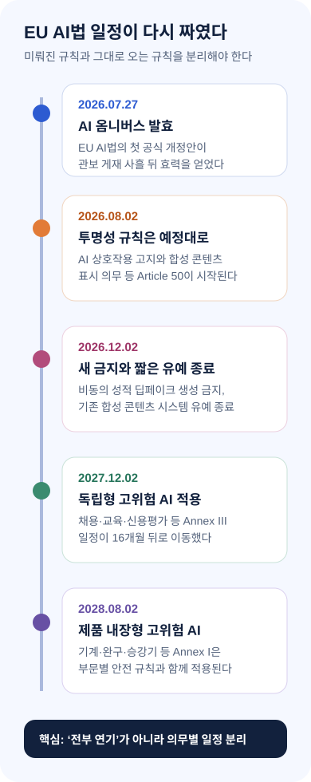
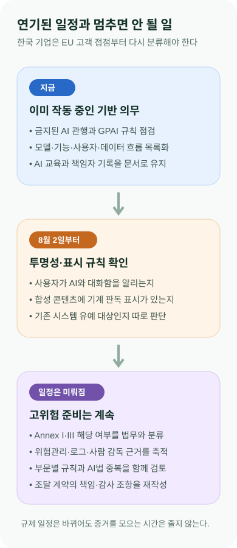

EU AI법이 미뤄졌다고 멈추면 안 되는 이유
유럽연합의 AI 규칙이 7월 27일 다시 짜였다. 채용·교육·신용평가 같은 독립형 고위험 AI의 본격 적용은 2027년 12월로 미뤄졌지만, AI와 대화 중이라는 고지와 합성 콘텐츠 표시를 포함한 투명성 규칙은 8월 2일 예정대로 시작된다. “AI법 전체가 연기됐다”는 한 문장으로 대응하면 가장 가까운 의무를 놓치게 된다.
EU AI Omnibus
달력이 하나에서 세 개로 갈라졌다
앞으로 기업은 이미 시행 중인 기본·범용 AI 규칙, 2026년 8월 시작되는 투명성 규칙, 2027년과 2028년으로 이동한 고위험 AI 규칙을 따로 관리해야 한다. 일정 연장은 준비 중단이 아니라 분류와 증거 수집의 우선순위를 다시 세우라는 신호에 가깝다.
유럽연합 집행위원회는 7월 27일 AI 옴니버스가 EU 전역에서 발효됐다고 발표했다. 정식 명칭은 Regulation (EU) 2026/1744다. 2024년 제정된 AI Act를 처음으로 공식 개정해 시행 일정과 행정 절차, 감독 권한, 일부 금지 행위를 손봤다.
법적 효력의 기준점은 보도자료 날짜가 아니라 관보와 규정 원문이다. EUR-Lex 원문은 이 규정이 7월 24일 EU 관보에 실렸고 현재 효력이 발생한 상태라고 표시한다. 영국 로펌 Lewis Silkin도 관보 게재 사흘 뒤인 7월 27일을 발효일로 확인했다.
가장 큰 변화는 고위험 AI 일정이다. Annex III에 해당하는 독립형 고위험 시스템은 원래 2026년 8월 2일부터 주요 의무가 적용될 예정이었지만 새 날짜는 2027년 12월 2일이다. 채용, 교육, 중요한 공공서비스, 일부 신용·보험 판단, 법 집행 같은 영역에서 쓰이는 AI가 대표 사례지만, 그 분야의 모든 AI가 자동으로 고위험이 되는 것은 아니다.
기계, 완구, 승강기 같은 규제 제품 안에 안전 구성요소로 들어가는 Annex I 고위험 AI는 2028년 8월 2일로 이동했다. 단순히 시간을 더 준 것만은 아니다. 기계류의 경우 기존 제품안전 규정과 AI법이 겹치는 부담을 줄이기 위해 부문별 규칙으로 연결하는 구조가 강화됐다.

미뤄진 고위험 규칙과 남아 있는 8월 의무
여기까지만 읽으면 “EU AI법이 1년 넘게 미뤄졌다”는 결론이 나오기 쉽다. 그러나 집행위원회의 최신 시행 일정표는 2026년 8월 2일에 AI법의 다수 규칙과 집행 체계가 예정대로 움직이기 시작한다고 명시한다. 특히 Article 50 투명성 규칙은 연기 대상이 아니다.
사용자에게 AI와 상호작용하고 있음을 알리는 의무, 합성 음성·이미지·영상·텍스트를 기계가 읽을 수 있는 방식으로 표시하는 의무가 여기에 포함된다. 8월 2일 이후 새로 시장에 놓이는 시스템은 그날부터 적용 여부를 따져야 한다. 이미 시장에 있던 일부 합성 콘텐츠 생성 시스템에는 12월 2일까지 짧은 전환 기간이 있다.
새로운 금지도 추가됐다. 비동의 성적 이미지나 친밀한 콘텐츠를 생성하는 이른바 누디파이 앱, 아동 성착취물을 생성하는 AI 시스템은 금지 대상에 들어갔다. 이 금지는 2026년 12월 2일부터 적용된다고 EU 공식 일정표가 설명한다.
범용 AI 모델 규칙 역시 새로 시작되는 것이 아니라 이미 2025년 8월부터 적용 중이다. 프런티어 모델 제공자가 기술문서와 저작권 정책, 학습 콘텐츠 요약 등을 준비해야 하는 축은 고위험 AI 일정 연장과 분리돼 있다. 자체 모델을 제공하는 기업과 외부 모델을 제품에 넣는 기업은 자신의 역할부터 구분해야 한다.
AI 리터러시 의무는 표현이 완화됐다. 개정 전에는 제공자와 배포자가 직원에게 “충분한 수준”의 AI 이해를 보장해야 한다는 부담이 강하게 읽혔다. 개정 후에는 AI를 운영하는 사람들의 이해를 지원하는 조치를 취하되, 개인별 자격이나 결과를 보장하는 방식까지 요구하지 않는 쪽으로 정리됐다.
그렇다고 교육 기록을 없애도 된다는 뜻은 아니다. 어떤 직원이 어떤 AI 기능을 사용하고, 누가 결과를 검토하며, 오류나 사고를 어디에 보고하는지 문서로 남기는 것은 여전히 기본 통제다. 고위험 AI 배포자에게는 별도의 사람 감독과 역량 요구가 붙을 수 있어 서비스별 구분이 필요하다.

완화된 절차, 넓어진 감독
규제 샌드박스 일정도 바뀌었다. 각 회원국이 최소 하나의 AI 규제 샌드박스를 운영해야 하는 날짜는 2027년 8월 2일로 이동했다. 대신 EU 차원의 샌드박스를 만들 수 있는 길이 열렸고, 스타트업과 중소기업, 일정 범위의 중견기업이 감독 아래 시험할 기회는 넓어졌다.
편향을 찾고 고치기 위한 민감정보 처리 근거는 더 넓은 AI 시스템과 모델로 확장됐다. 다만 아무 데이터나 쓸 수 있다는 허가가 아니다. 엄격한 필요성과 보호조치가 전제되므로, 편향 테스트용 데이터셋의 수집 근거와 접근 권한, 보유 기간을 따로 설계해야 한다.
AI Office의 감독 범위는 오히려 커졌다. 범용 모델을 기반으로 하면서 대형 온라인 플랫폼이나 검색 서비스에 들어간 일부 시스템을 더 직접적으로 볼 수 있게 됐다. 일정 완화와 감독 약화가 같은 말이 아니라는 점을 보여 주는 대목이다.
왜 EU는 시행 직전에 법을 고쳤을까. 규정 원문은 고위험 AI 준수에 필요한 조화표준의 준비가 늦었고, 국가별 거버넌스와 적합성 평가 체계도 예상보다 더디게 갖춰졌다고 설명한다. 기업에 의무를 부과하면서 정작 준수 방법을 보여 줄 표준과 심사 인프라가 부족하다는 현실을 인정한 셈이다.
시민단체 입장에서는 후퇴로 읽힐 수 있다. 채용·교육·신용평가처럼 삶에 큰 영향을 주는 시스템의 강한 의무가 16개월 밀렸기 때문이다. 반대로 기업은 불명확한 표준으로 27개 회원국에서 제각각 준비하는 비용을 줄일 시간을 얻었다. 이번 개정은 혁신과 기본권 보호 사이에서 어느 한쪽이 완전히 이긴 결과라기보다, 시행 가능성을 둘러싼 정치적 타협이다.
몰타 정보·데이터보호위원회는 고위험 규칙이 미뤄졌지만 투명성 의무는 8월 2일 예정대로 적용된다고 별도로 경고했다. 국가 감독기관이 이 점을 강조했다는 것은 “전체 연기”라는 오해가 실제 현장에서 위험하다는 뜻이다.
계약도 새 달력에 맞춰 쪼개야 한다. 모델 공급자에게 고위험 적합성 문서의 완성 시점만 묻기보다, 8월 투명성 표시를 구현할 메타데이터와 워터마크, 금지 콘텐츠 차단, 로그 제공 범위, 사고 통보 시간을 별도 납품 항목으로 정하는 편이 안전하다. 일정이 다르다는 이유로 책임 조항까지 한 날짜에 묶으면 가장 먼저 도래하는 의무의 담당자가 사라질 수 있다.
한국 기업은 규정이 아니라 기능부터 세야 한다
한국 기업도 EU에 법인이 없다는 이유만으로 무관하다고 보기 어렵다. EU 시장에 AI 제품을 내놓거나, EU 고객에게 AI 기능을 제공하거나, EU에서 결과가 사용되는 서비스라면 역할과 적용 범위를 검토해야 한다. 특히 채용 SaaS, 교육 추천, 금융 심사, 의료기기, 산업장비, 고객센터 챗봇, 이미지·영상 생성 기능은 서로 다른 일정과 조항을 만난다.
첫 번째 실무는 기능 목록을 만드는 일이다. 회사가 “AI 제품”이라고 부르는 것만 적으면 빠지는 항목이 생긴다. 검색 요약, 자동 분류, 이상 탐지, 음성 합성, 광고 소재 생성, 직원 평가 보조처럼 기존 제품에 조용히 들어간 기능까지 모델·데이터·사용자·출력의 흐름으로 정리해야 한다.
두 번째는 역할을 나누는 일이다. 직접 모델을 만드는 제공자, 타사 모델을 서비스에 넣는 제공자, 업무에 쓰는 배포자, 유통·수입을 담당하는 사업자의 의무는 다르다. 클라우드 API를 쓴다는 사실만으로 책임이 모델 회사로 모두 넘어가지는 않는다.
세 번째는 8월 2일 투명성 점검이다. 화면에서 AI임을 알리는 위치, 사용자가 사람 상담원으로 전환할 수 있는지, 합성 콘텐츠 표시가 파일 변환 뒤에도 남는지, 모델 공급자의 워터마크와 자사 배포 계층이 충돌하지 않는지를 실제 제품에서 확인해야 한다.
네 번째는 미뤄진 고위험 준비를 증거 중심으로 바꾸는 일이다. 위험관리 문서, 데이터 품질 근거, 정확도와 편향 평가, 로그, 사람 감독, 사고 대응, 공급자 계약을 한 번에 완성하려 하지 말고 제품 개발 주기에 붙여 계속 축적하는 편이 낫다. 2027년에 서류를 새로 쓰기 시작하면 운영 이력을 복원하기 어렵다.
EU 고객에게 내는 제안서와 보안·개인정보 부속서도 같은 기능 목록을 사용해야 한다. 영업 문서에는 “보조 기능”이라고 적었는데 실제 화면에서는 사용자의 판단을 대체하거나 합성 결과물을 자동 배포한다면 분류와 책임이 어긋난다. 제품, 법무, 보안, 구매가 서로 다른 표를 관리하지 않고 하나의 기능 등록부에서 적용 조항과 증거 위치를 함께 갱신해야 한다.
다음 변화를 가를 네 가지 신호
앞으로 볼 지표는 네 가지다. EU가 조화표준과 고위험 분류 지침을 언제 확정하는지, 회원국 감독기관이 Article 50을 어떻게 집행하는지, 기계류 부문별 위임법령이 어떤 안전 요구를 넣는지, EU 샌드박스가 실제로 어느 기업과 시스템을 받는지다.
내 결론은 간단하다. 이번 AI 옴니버스는 규제를 지운 법이 아니라 순서를 다시 배치한 법이다. 기업은 고위험 적합성 평가의 숨을 돌릴 시간을 얻었지만, 투명성·범용 모델·금지 행위·기본 거버넌스는 서로 다른 시계로 계속 움직인다.
한국 기업이 지금 해야 할 일도 “기다리기”가 아니다. 8월에 적용되는 기능을 먼저 고치고, 2027년과 2028년 의무에 필요한 증거는 운영 과정에서 쌓아야 한다. EU의 새 달력에서 가장 위험한 선택은 날짜가 바뀌었다는 이유로 시계를 꺼 버리는 것이다.
출처와 더 읽을 자료
- European Commission: AI Omnibus enters into force
- EUR-Lex: Regulation (EU) 2026/1744
- EU AI Act Service Desk: Implementation timeline
- Council of the EU: Final green light for the AI Omnibus
- Lewis Silkin: The Digital Omnibus on AI enters into force
- Malta IDPC: Revised EU AI Act timelines
- European Parliament Research Service: Digital Omnibus on AI